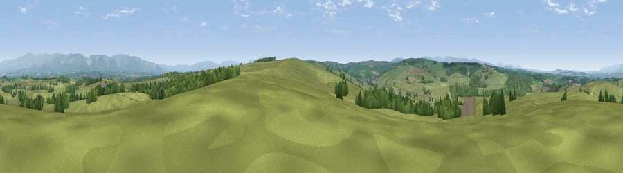

Viewpoint near Maulds Meaburn
#11048 in England · top 44% of its area beats it · near Maulds Meaburn · access?Where it is
The exact computed spot (NY 63525 16925). Click the marker for map links.
Public access: no public right of way or access land is recorded at this exact spot — it may be on private land. Computed from Natural England's CRoW access layer and OpenStreetMap rights of way — not the legal definitive map. Always verify locally.
The view, rendered

A 360° render of this exact spot computed from the terrain model, tree cover and land cover — summer colours, afternoon light, calibrated against photographs of famous viewpoints. Real trees, hedges and buildings will differ in detail.
The panorama
Grey silhouette: terrain skyline in each direction (720 bearings, Earth curvature and refraction included). Dashed green: skyline with trees (+15 m) and buildings (+8 m) as obstacles. Blue strip: how far the ground is visible on each bearing.
Where the view opens
Wedge length = distance to the farthest visible ground on that bearing (vegetation-aware). Rings at 10, 25 and 50 km.
What fills the view
85% grassland · 12% woodland · 2% cropland ·
Angular shares of the visible panorama (visual magnitude), not map area. Landscape diversity 0.22 (0–1 Shannon).
Key numbers
More beautiful places nearby
The staircase of upgrades: each row has a higher view potential than everything closer. Driving times are estimates from straight-line distance, calibrated against real road routing — check an actual route before setting out.
| Place | Direction | Drive | Score |
|---|---|---|---|
| Viewpoint near Maulds Meaburn | SSE · 1 km | ~3 min | 61.8 |
| Viewpoint near Maulds Meaburn | S · 2 km | ~5 min | 62.2 |
| Viewpoint near Crosby Ravensworth | WSW · 4 km | ~10 min | 65.0 |
| Linglow Hill | SSE · 5 km | ~11 min | 66.8 |
| Long Scar Pike [Coalpit Hill] | SW · 7 km | ~15 min | 68.9 |
| Viewpoint near Cliburn | NNW · 11 km | ~20 min | 69.0 |
| Long Fell | SW · 11 km | ~21 min | 72.4 |
| Dufton Pike | NNE · 12 km | ~22 min | 73.7 |
54.54626, -2.56536 · source: screening · position refined by local search. Computed location — check access rights before visiting.